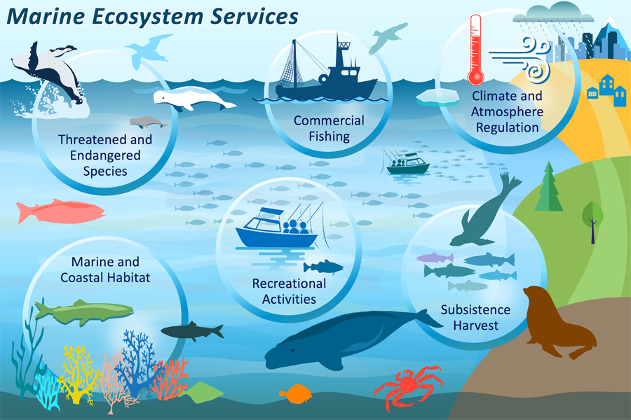
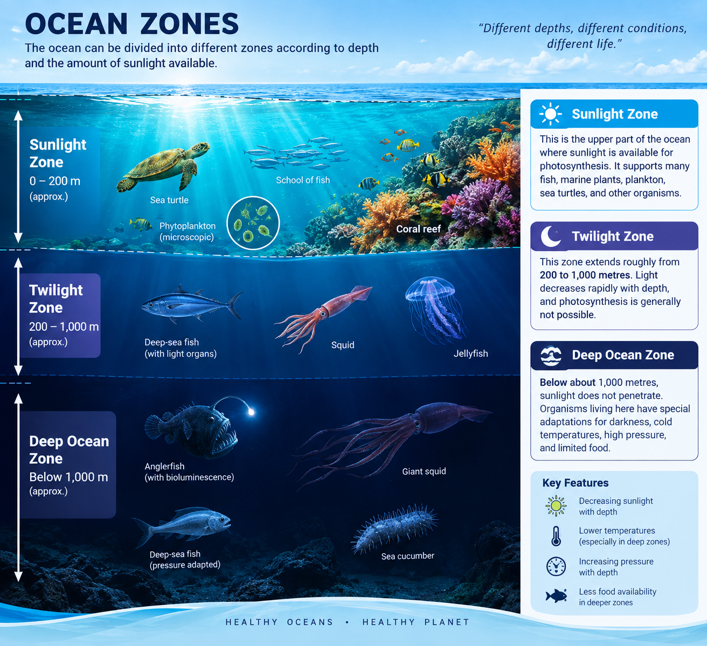
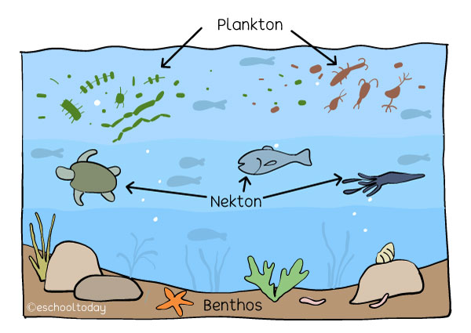
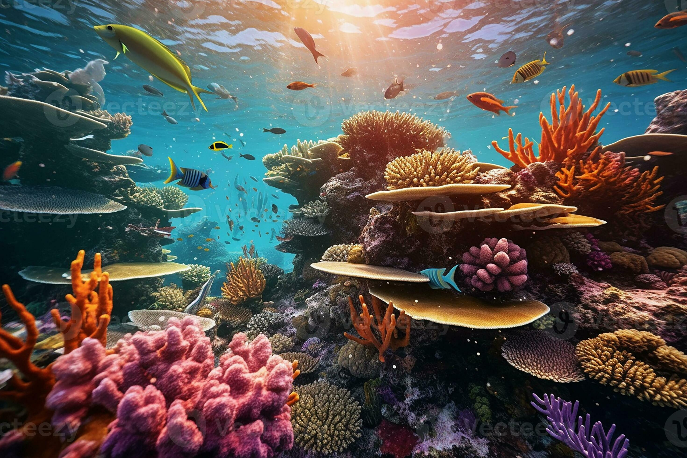
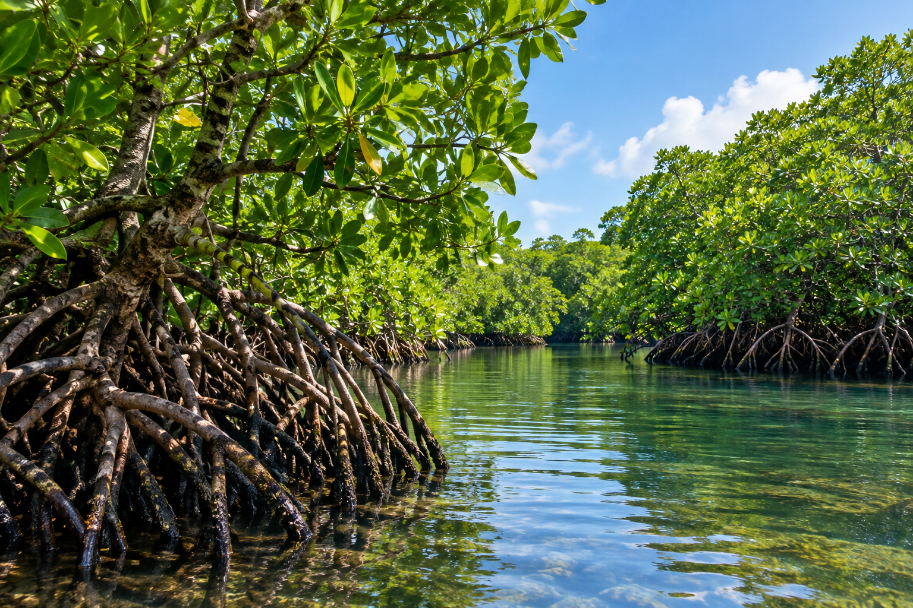
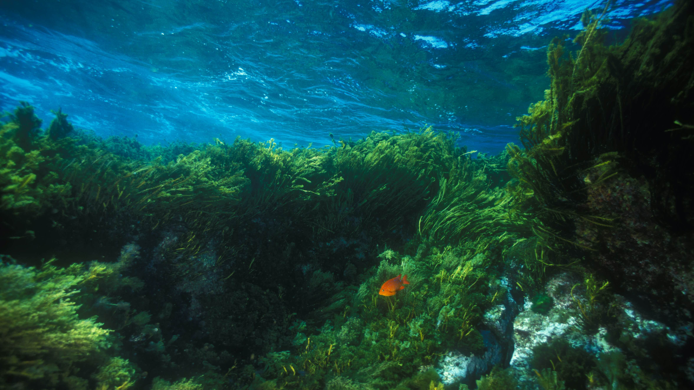
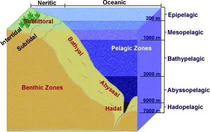

Characteristics of Marine Life
I. Marine organisms are adapted to living in saltwater environments.
II. They have adaptations that help them survive different temperatures, pressures, and depths.
III. Many marine organisms depend on other organisms for food and survival.
IV. Marine plants and phytoplankton contribute to marine food webs.
V. Some organisms live near the surface, while others survive in the deep ocean.
VI. Marine ecosystems contain both microscopic and large organisms.
Marine Ecosystems

Marine ecosystems are communities of organisms interacting with one another and with their physical environment. Major marine habitats include coral reefs, mangrove forests, seagrass beds, estuaries, intertidal zones, open oceans, and the deep sea.
Ocean Zones

The ocean can be divided into different zones according to depth and the amount of sunlight available.
1. Sunlight Zone:
This is the upper part of the ocean where sunlight is available for photosynthesis. It supports many fish, marine plants, plankton, sea turtles, and other organisms.
2. Twilight Zone:
This zone extends roughly from 200 to 1,000 metres. Light decreases rapidly with depth, and photosynthesis is generally not possible.
3. Deep Ocean Zone:
Below about 1,000 metres, sunlight does not penetrate. Organisms living here have special adaptations for darkness, cold temperatures, high pressure, and limited food.
Classification of Marine Organisms

Marine organisms can be broadly grouped into three major categories:
I. Plankton:
These are organisms that drift with ocean currents. Phytoplankton are microscopic organisms that form an important foundation of marine food webs.
II. Nekton:
These are organisms capable of actively swimming through the water. Examples include fish, dolphins, whales, squid, and sea turtles.
III. Benthos:
These are organisms that live on or near the ocean floor. Examples include crabs, starfish, sea cucumbers, clams, and some worms.
Important Marine Habitats
1. Coral Reefs:

Coral reefs are highly diverse marine ecosystems that provide habitat for thousands of marine organisms. They also support fisheries, tourism, and coastal communities.
2. Mangrove Forests:

Mangroves are coastal plants adapted to salty and waterlogged environments. They provide shelter and nursery areas for many marine organisms and can store significant amounts of carbon.
3. Seagrass Beds:

Seagrasses provide food, shelter, spawning areas, and nursery habitats for many marine animals. They also help stabilize sediments and add oxygen to surrounding water.
4. Intertidal Zone:

This is the region between high and low tide where the ocean meets the land. Organisms living here must cope with changing water levels, waves, sunlight, and periods of exposure to air.
Importance of Marine Life
Marine life is important because it:
- Supports marine food chains and food webs.
- Provides food and resources for humans.
- Supports fishing and other coastal activities.
- Provides habitats for countless organisms.
- Contributes to nutrient and carbon cycles
.
- Helps maintain healthy marine ecosystems.
Threats to Marine Life
Marine ecosystems can be affected by several human and environmental pressures, including:
I. Plastic and other forms of marine pollution.
II. Overfishing and unsustainable fishing practices.
III. Destruction of coastal habitats.
IV. Ocean warming and climate change.
V. Ocean acidification.
VI. Reduction in oxygen levels in some marine environments.
Marine Conservation
Marine conservation involves protecting ocean environments and maintaining healthy populations of marine organisms. Conservation activities include protecting important habitats, monitoring marine species, reducing pollution, managing fisheries, restoring damaged ecosystems, and establishing protected marine areas.
Marine Research
Marine researchers use techniques such as underwater observation, satellite monitoring, remotely operated vehicles, scientific surveys, tagging, and environmental sampling to study marine organisms and their habitats. Research helps scientists understand how marine ecosystems function and how they respond to environmental changes.